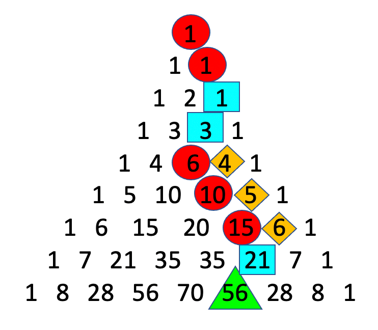
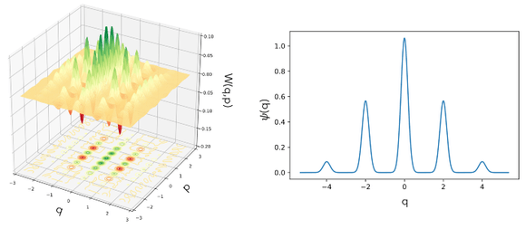

My work in steganography concerns methods of transmitting quantum and classical information which renders that information indistinguishable from noise one might expect to occur naturally in the channel of transmission, where the indistinguishability is with respect to metrics such as fidelity. Depending on the channel, type of state used to transmit information, and measurement capability, this can involve a wide range of encoding strategies and corrective protocols. The image at the right displays a particular encoding scheme for Fock states involving a combinatoric encoding that can be visualized using Pascal's triangle - which also demonstrates the linear complexity of encoding and decoding. This work is geared toward optical media and CV protocols. Our collaborators, Haley Weinstein and Jon Habif of USC, have experimentally demonstrated the transmission of classical information via an artificial thermal state comprised of coherent transmissions, and used tomography to quantify the similarity of these states. We have also shown that it is possible to transmit both CV and DV quantum information steganographically and use it for useful communication tasks, with the future goal of demonstrating this experimentally.

